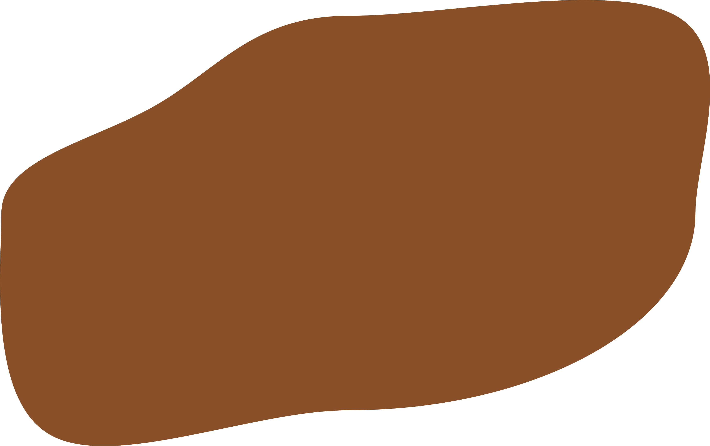
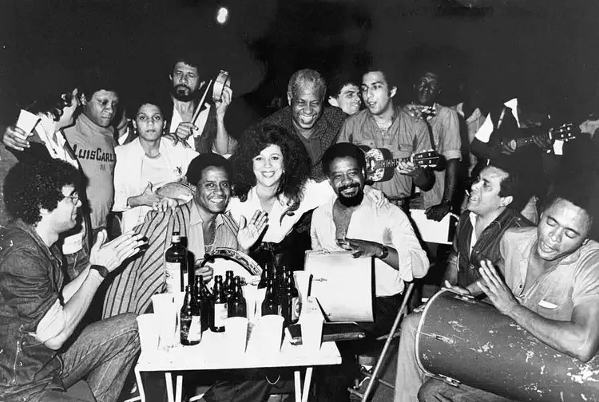

O Cacique de Ramos é um bloco carnavalesco fundado em 1961, no bairro do Caju, Rio de Janeiro. Ele é conhecido por sua contribuição significativa para a cultura do samba e por ser um dos blocos mais tradicionais do Carnaval carioca.

SAMBA
Pressione qualquer tecla
INTRODUÇÃO
Fundo de Quintal
O Fundo de Quintal não é apenas um grupo; é o marco zero do samba moderno. Nascido sob a sombra das tamarineiras do bloco carnavalesco Cacique de Ramos, no Rio de Janeiro dos anos 70, o grupo transformou o que era uma reunião informal entre amigos na maior revolução estética do gênero. Ali, o samba de terreiro ganhou uma nova batida, mais urbana, mais próxima do povo e imensamente sofisticada.
